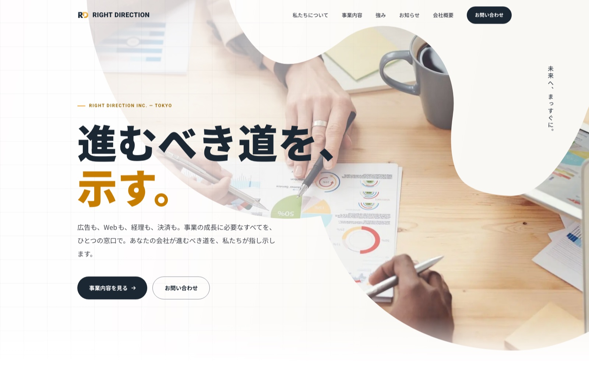

Works — Corporate Site（実案件）
株式会社ライトディレクションコーポレートサイト
東京・江東区のWeb制作・システム開発会社「株式会社ライトディレクション」のコーポレートサイト。「AIをどこまで実務の制作に使えるか」を検証する依頼案件として、構成からデザイン・実装・公開までを一貫して担当しました。名刺デザインもあわせて制作しています。


Purpose制作の目的
広告・Web・システム・経理決済までを「ひとつの窓口」で支える——その事業価値を、初めて訪れる経営者にまっすぐ伝えることを目的に制作しました。コーポレートカラーの紺と金を軸に、キャッチコピー「進むべき道を、示す。」が体現する誠実さと推進力が同居するトーンを設計しています。
本案件は同時に、「AIをどこまで実務の制作に使えるか」を会社から依頼されて検証するプロジェクトでもあります。品質を落とさずにどの工程をAIへ任せられるかを見極めながら、構成・デザイン・実装・原稿・画像素材までを一貫して進行しました。
AI WorkflowAIとの協働プロセス
デザイン案の生成と比較検討、HTML・SCSS・JavaScriptのコーディング、原稿やコピーの下書き、写真・画像素材の用意まで、各工程でAIを活用。人間は要件の整理とディレクション、案の選定・調整、品質の最終判断に集中する分業体制で、少人数・短期間での公開を実現しました。
検証を通じて明確になったのは「AIは選択肢と速度を、人は判断と一貫性を」という役割分担です。生成された案をそのまま使うのではなく、ブランドトーンに沿って取捨選択し整える編集の目が仕上がりを決める——この知見は、以降の制作フロー全体に還元しています。
Designデザインの工夫
ファーストビューは有機的なブロブ形状で写真をマスクし、大きなキャッチコピーと組み合わせる構成に。堅くなりがちなBtoBのコーポレートサイトに、動きと親しみやすさを持たせました。
スクロールに応じて立ち上がるテキストなどの演出を加えつつ、prefers-reduced-motion（動きを減らす設定）にも対応。リッチな演出とアクセシビリティを両立させています。
この作品の制作意図や工夫について、詳しくお話しできます。お気軽にご連絡ください。
お問い合わせ